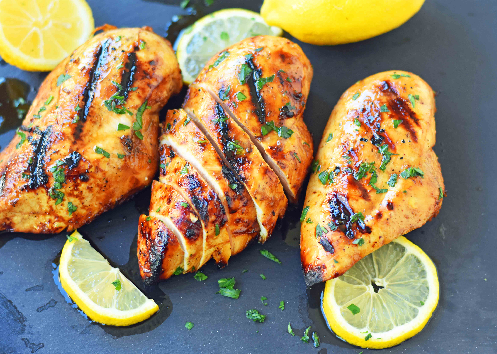

Marinated Chicken

Description
This Grilled Chicken Marinade Recipe is made with extra virgin olive oil, freshly squeezed lemon juice, balsamic vinegar, soy sauce, brown sugar, Worcestershire sauce, garlic, salt, and pepper. You have such a variety of seasonings in this marinade.
Ingredients
- 2 lbs. Chicken Breasts Tenders, or Thighs
- ⅓ - ½ cup Extra Virgin Olive Oil depending on preference
- 3 Tablespoons Fresh Lemon Juice
- 3 Tablespoons Soy Sauce
- 2 Tablespoons Balsamic Vinegar
- 3 Garlic Cloves minced or ½ teaspoon Garlic Powder
Steps
- In a bowl, stir together oil, lemon juice, soy sauce, balsamic vinegar, brown sugar, Worcestershire sauce, garlic, salt, and pepper.
- Pierce chicken breasts with a fork all over. Place in a large Ziploc bag. Pour marinade over chicken.
- Let marinate for at least 30 minutes. 4 - 5 hours is ideal.
- Let marinate for at least 30 minutes. 4 - 5 hours is ideal.
- Place chicken on the grill. Cook for approximately 5 - 6 minutes per side, depending on the thickness of chicken. The internal temperature of the chicken should reach 165 degrees.
- Remove chicken from grill and let rest for 5 minutes.